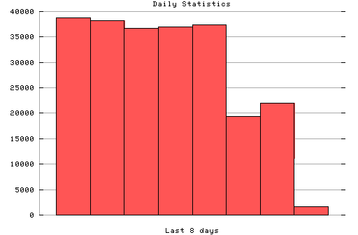

HTTP Server Daily Statistics
Covers: 03/04/96 to 03/11/96 (8 days).
All dates are in local time.
03/04/96 (Mon): 38740 : ##############################################||### 03/05/96 (Tue): 38220 : ##############################################||### 03/06/96 (Wed): 36696 : ##############################################||### 03/07/96 (Thu): 37010 : ##############################################||### 03/08/96 (Fri): 37450 : ##############################################||### 03/09/96 (Sat): 19390 : ##############################################||### 03/10/96 (Sun): 22012 : ##############################################||### 03/11/96 (Mon): 1603 : ##############################################||###

Statistics generated at Mon Mar 11 02:56:24 MET 1996, (C) Schibsted Nett AS, 1995.